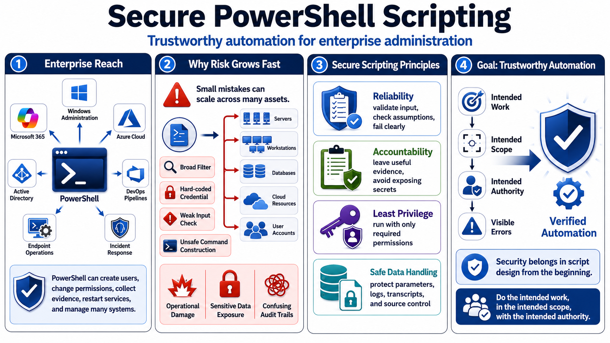

Why Secure PowerShell Scripting Matters
Connecting to LMS... Progress: in progress

Narration
PowerShell is more than a shell. In many organizations it is an enterprise automation platform used for Windows administration, Microsoft 365, Azure, Active Directory, DevOps workflows, endpoint operations, and incident response. A short script can create users, change permissions, collect evidence, restart services, configure cloud resources, or modify hundreds of systems. That reach is exactly why secure scripting matters.
The same qualities that make PowerShell useful also make careless automation risky. A script with a broad filter, a hard-coded credential, a weak input check, or an unsafe command construction pattern can affect many assets quickly. Security is not only about blocking attackers. It is also about preventing avoidable operational damage, protecting sensitive data, and making administrative actions understandable after the fact.
Secure PowerShell scripting combines reliability, accountability, least privilege, and careful data handling. Reliable scripts validate what they receive and fail clearly when assumptions are not met. Accountable scripts leave useful operational evidence without exposing secrets. Least privilege keeps automation inside the permissions it actually needs. Safe data handling prevents parameters, logs, transcripts, and source control from becoming places where sensitive values leak.
The goal is trustworthy automation. A secure script should do the intended work, in the intended scope, with the intended authority, while making errors visible enough to fix. That means security is part of script design from the beginning, not a cleanup step after a useful command has been copied into production.